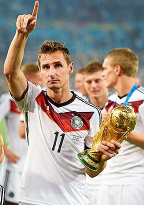
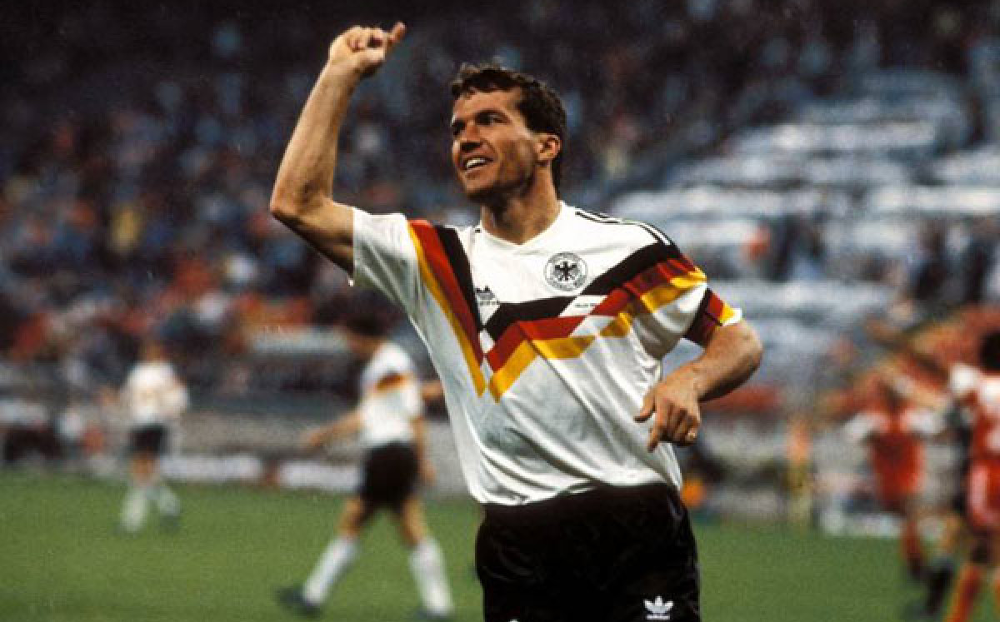
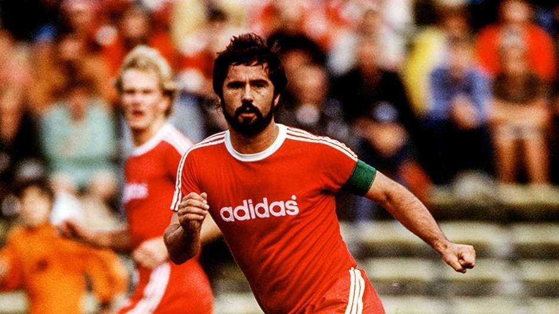
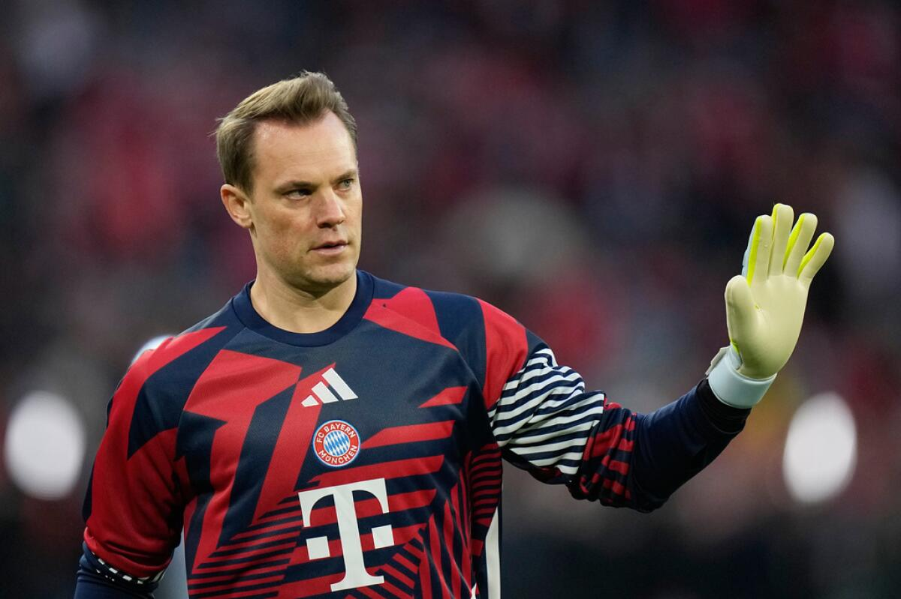

ALEMANIA
Una de las máximas potencias del fútbol mundial arriba al certamen combinando su tradicional rigor competitivo con una renovación generacional hambrienta de devolver la gloria absoluta a su escudo.





Son históricamente la selección más regular del planeta, habiendo alcanzado la instancia de semifinales o superior en 13 ediciones mundialistas a lo largo del tiempo.
Ostentan cuatro estrellas en su escudo logradas en las ediciones de 1954, 1974, 1990 y el recordado título de Brasil 2014 tras el imponente 7-1 al anfitrión.
Clasificaron liderando con una autoridad aplastante su grupo europeo de la UEFA, consolidando una racha goleadora indestructible de cara al torneo actual.
UEFA (Europa)
Die Mannschaft / La Máquina
Alcanzar el pentacampeonato. Tras procesos de reestructuración, la meta única del gigante teutón es igualar la línea de Brasil y bordar la quinta estrella en su camiseta.